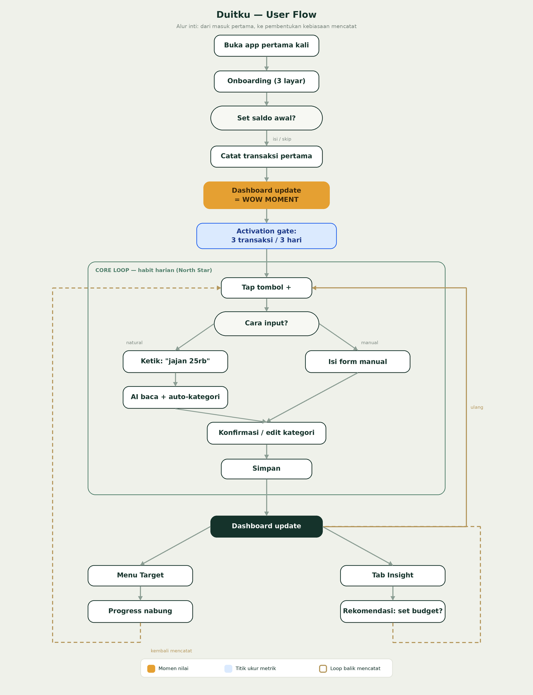

A personal finance app that turns a plain sentence into a tidy transaction — built to help young Indonesians actually stick with tracking their money.
"My money runs out and I don't know where it went" is a common feeling among young first-jobbers. Digging in, the feeling isn't the problem — four root causes are:
Existing tools each solve only part of this: accounting-style apps are too heavy, e-wallet history doesn't unify across sources, and bank budgeting is locked to one bank. That gap is where Duitku lives.
23, fresh graduate in his first job (± Rp5–7M/month). Tech-savvy, lives in his e-wallets, and puzzled every month by a thin balance he can't explain. He's tried tracking apps before — and dropped them within days.
What Raka needs: to know where his money goes without the effort; to be nudged before he overspends; and to stay disciplined toward a savings goal.
The real goal isn't "let people log expenses" — it's building the habit of logging. That shaped the metric I'd optimise for.
North Star: logged transactions per active user per week — the strongest proxy that the habit has formed.
| Metric | What it tells us | Target (hypothesis) |
|---|---|---|
| Activation | Logged ≥3 transactions in first 3 days | ≥ 40% |
| Retention | D7 / D30 retention | ≥ 25% / 15% |
| Engagement | DAU/MAU stickiness | ≥ 20% |
To ship something focused, I prioritised with MoSCoW. The most useful call was what to leave out — and why.
Natural-language logging, dashboard, category breakdown, savings goals, auto insight.
Direct bank connection (open banking) — the deepest problem here, but it needs licensing & infrastructure. Deliberately a v2 vision.
I mapped the journey around one core loop, marking the two moments that drive the metrics: the first-transaction "wow moment," and the activation gate.

I locked layout and hierarchy in grayscale first, then raised only the approved structure to high fidelity.
Logging friction is what makes people quit. I could keep a fast manual form, or let users type in plain language. I chose natural-language input — the lowest-friction way in — because the whole product lives or dies on whether the habit forms.
First, the app auto-filled the category and saved silently — feels magical. But I realised that when the AI guesses wrong, a silent save adds friction instead of removing it. So I added a one-tap category correction: the guess is always visible and editable before saving. Showing this iteration matters more than a design that looks flawless from the start.
Everything points at one thesis: lowest friction in, highest value out.
A calm, trustworthy base with one warm accent — chosen deliberately to avoid the generic fintech look.
Signature: money amounts are set in Space Mono — a nod to the ledger heritage of finance, and easier to scan and align. A small choice that signals every decision has a reason.
| Risk | Mitigation |
|---|---|
| AI mis-categorises natural input | Guess is always visible and correctable in one tap |
| Users stop logging after a few days | Lowest-friction input + early wow moment + gentle reminders |
| MVP tries to do too much | Strict Must-have scope; everything else deferred |